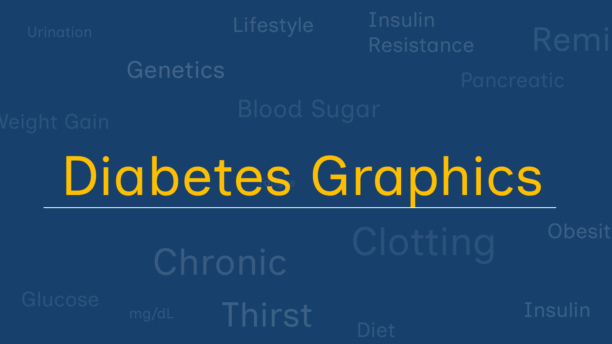
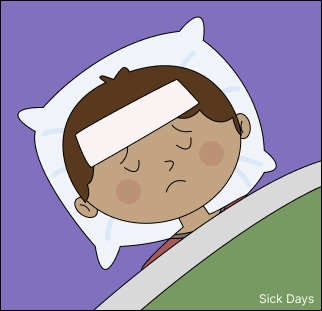
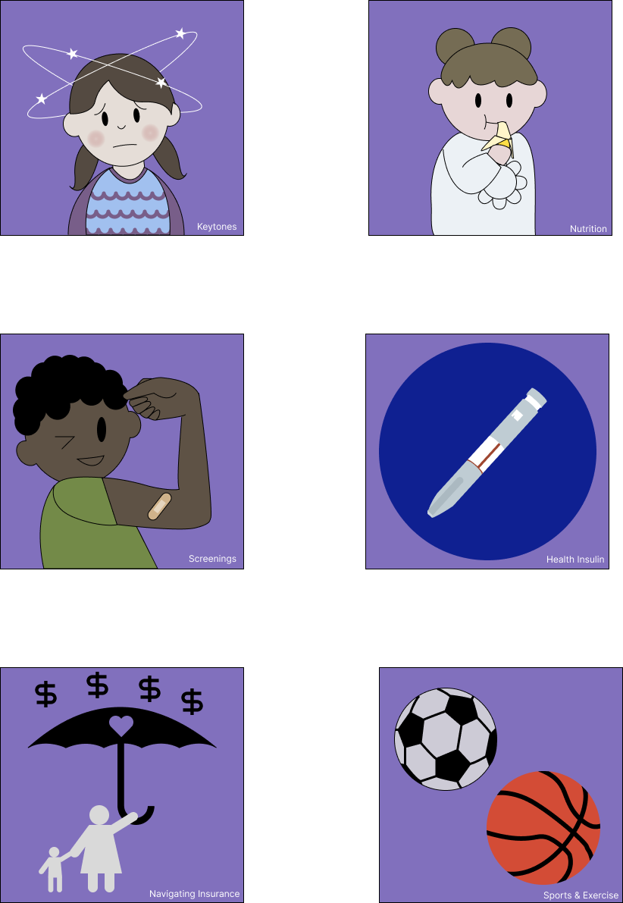

The diabetes website graphic project was a voluntary undertaking spanning from the end of 2025-2026 in collaboration with the UC Davis Health Center. A new web page detailing the effects of diabetes on young children was being was under works and a group of UC Davis students were needed to complete the graphics.
After corresponding with the Health Marketing team through email, I came to understand that the graphics had to adhere to the UC Davis Health brand guidelines, be readable at a minimized scale, and remain appealing and friendly to children and parents.
The first step was researching the way that other health-based organization presented the idea. My main takeaway was that simplicity, readability, and empathy were key. With that in mind, I created my first sketch using a clip art style to maintain a universal appeal while being readable and appealing to children.

I struggled initial to find a symbol for sickness was universal enough, and after some research on the topic, I based my first image off of some references I had found. Another challenge was reaching a level of detail that felt appropriate for the scale without feeling cluttered. The final result, completed in Figma, was a compromise between an abundance of detail, and readability.
Next, I sent the image to the Health Marketing team for review. The main takeaways was that they liked the idea and execution but the overall style of the piece was subject to change based on other factors.
With that confirmation, I moved forward to the rest of the images.

This project served as one of my formative experiences working with a client outside of a classroom environment. I learned how to communicate effectively, schedule meetings that worked with a whole team’s schedule, adhere to a brand guideline, and communicate and synchronize with other designers.